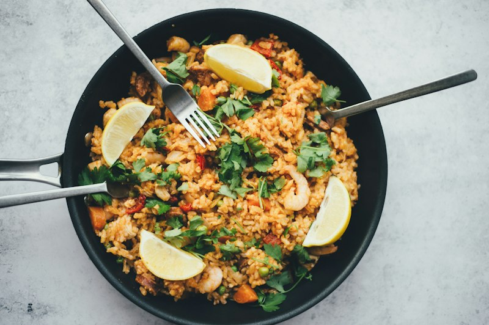
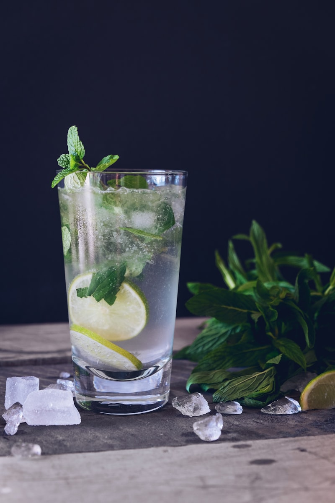

Taste the Soul of Betawi Gastronomy
Betawi cuisine is a centuries-old culinary symphony formed by the confluence of indigenous Indonesian herbs, Chinese stir-frying, Arabic aromatic spices, and European colonial flair. Explore the signature delicacies of my hometown.
 Main Dish
Main Dish
Soto Betawi
Creamy Coconut & Fresh Milk Beef Soup
Jakarta's most iconic soup, featuring tender beef cubes, tendon, and brisket simmered in a rich golden broth of coconut milk and fresh dairy, perfumed with lemongrass and cloves.
Kerak Telor
Traditional Charcoal-Fired Crispy Omelette
The signature festival dish cooked on a charcoal brazier without any cooking oil. Made from sticky rice, duck egg, dried shrimp (ebi), and topped with aromatic roasted coconut serundeng.
 Street Snack
Street Snack
Asinan Betawi
Tangy Preserved Vegetable & Tofu Salad
A zesty salad of pickled mustard greens, shredded cabbage, bean sprouts, and steamed tofu drenched in a sweet, sour, and mildly spicy peanut vinegar dressing with crunchy kerupuk mie.

Main DishNasi Uduk Betawi
Aromatic Coconut Fragrant Rice
Fluffy white rice cooked with thick coconut milk, bay leaves, kaffir lime leaves, and lemongrass. Traditionally served alongside sweet soy-braised tofu (semur), crispy tempeh orek, shredded omelette, spicy peanut sambal, and emping melinjo.

Traditional DrinkBir Pletok Betawi
Non-Alcoholic Herbal Wellness Elixir
Despite the word "Bir", this heritage elixir contains zero alcohol. Crafted from sappan wood (kayu secang) for its crimson hue, combined with ginger, lemongrass, cloves, cardamom, and cinnamon to warm the body and boost immunity.
Soto Betawi Recipe & History
Key Ingredients:
- 500g Beef brisket / shank and tendon
- 500ml Coconut milk & 300ml Fresh cow's milk (signature creamy balance)
- Aromatics: Lemongrass, kaffir lime leaves, cloves, cinnamon, nutmeg, galangal
- Ground paste: Shallots, garlic, ginger, roasted candlenuts, coriander
- Condiments: Emping crackers, diced tomato, fried shallots, lime, sambal rawit
Where to Eat in Jakarta:
Soto Betawi H. Husein (Jl. Padang Panjang No. 6C, Manggarai) or Soto Betawi Haji Ma'ruf (Taman Ismail Marzuki).
Asinan Betawi Secrets
Fresh Components:
Fresh cabbage, preserved sawi asin (mustard greens), sawi hijau, lokio (wild chives), bean sprouts, and sliced firm tofu. The sauce is a masterclass in balance: roasted peanuts ground with palm sugar, vinegar, dried shrimp ebi, and red bird's eye chilies.
Where to Eat:
Asinan Betawi H. Mansyur (Asinan Kamboja) - Rawamangun, East Jakarta (operating since 1970).